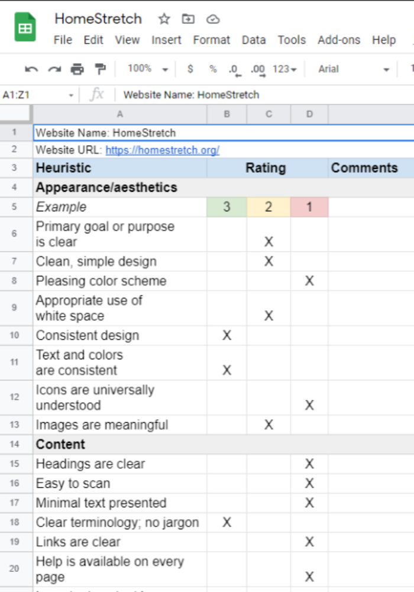

Bean Box - Checkout Redesign
Overview of the project, the problem statement, and my role in the project

Research

Copy on my research will go here.
Proto-persona
Copy on my Proto-persona will go here.
Wireframes
Copy on my wireframes will go here.
Prototyping
Copy on my prototyping process will go here.
Lessons Learned
Copy on my what I learned will go here.
HomeStretch - Non-profit Redesign
HomeStretch is an organization that provides economic relief to families in financial distress. I joined an agile UX design team as a content strategist and information architecture to redesign the non-profit's website.
HomeStretch initially developed its site as a catch-all solution for every possible thing any user may need. The goal for the original design was to accommodate every likely user.
In the below case study, I walk through the design process and highlight my key contributions.
Definition
The team's first step was defining the site's potential users and what the stakeholders wanted the site to convey.
From initial conversations with HomeStretch, the team identified an insight statement, value proposition, problem statement, A UX Hypothesis, and three proto-personas.
Research
Conducting initial user research, the design team uncovered three different personas. After speaking with key stakeholders, the team took the direction to optimize the site for one of the three personas - the donor.
From here, I took responsibility for redlining the site's current navigation, bucketing navigation into major themes, and conducting a card sorting exercise based on those themes.

Analysis
I took the feedback I collected from research on the site's current information architecture and added it to the data other team members collected. Using research collected by the team, I analyzed how well the current site served users with relevant content.
A Heuristic Analysis allowed me to rate the effectiveness of the current design layout.
I would rely on the persona to create a UX Scenario. This exercise allowed me to conceptualize the persona's motivation and the steps they would take to achieve their goal.

Creating a User Scenario helped me understand the persona on a deeper level. I applied this understanding to create a User Task Flow for a donor's path to complete a donation.

Design
My role in the project's design phase was creating an updated site map and low fidelity prototypes of the suggested redesign.
From initial conversations with HomeStretch, the team identified an insight statement, value proposition, problem statement, A UX Hypothesis, and three proto-personas.
 >>>>>>> Stashed changes
>>>>>>> Stashed changes
Validation
The team took the initial hand-drawn wireframes to the stakeholders at HomeStretch.

From there, low fidelity digital mockups were created by the UX Designer on the team. These prototypes were tested with users, iterated further, and eventually turned into higher fidelity prototypes.